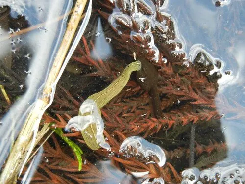

其他无脊椎动物 · 动物界
日本医蛭 Hirudo nipponia

中国和日本常见的吸血蛭，唾液含抗凝血物质，是中药蚂蟥的来源之一，可用于提取水蛭素，需注意卫生防护。
- 分类
- 门环节动物门纲环带纲目无吻蛭目科医蛭科属医蛭属
- 栖息环境
- 稻田、池塘、沟渠和水草丰富的水体中
- 地理分布
- 中国大部分地区、日本和朝鲜半岛
- 保护级别
- 暂无评估；野生资源受过度采集影响
物种志
日本医蛭体长约 4–8 cm，身体扁长，前后各有一个吸盘，体背灰绿或黄绿色，有数条深色纵纹，腹面颜色较浅。它属于环节动物，身体分节明显，没有骨骼，靠肌肉伸缩和吸盘附着移动。
它生活在稻田、池塘、沟渠和水草丰富的水体中，吸食人畜等温血动物的血液，一次吸血后可数月不进食。唾液中含有水蛭素等抗凝血物质，使伤口持续流血而不易凝固。日本医蛭是中国传统中药材蚂蟥的来源之一，可用于提取水蛭素；在野外水田或沼泽活动时，应穿长裤和雨靴，减少皮肤暴露，离开水边后检查腿脚和衣物，被叮咬时不要硬拽，可轻拍或用盐、醋促使它自行脱落，伤口要消毒处理。
形态与习性
- 食性吸食人畜等温血动物的血液
- 体长约 4–8 cm
- 唾液含水蛭素等抗凝血物质
- 耐饥一次吸血后可数月不进食
- 用途中药蚂蟥的来源之一，可提取水蛭素
- 防护穿长裤雨靴、减少皮肤暴露，叮咬后及时消毒
趣味知识
- 日本医蛭吸血时，唾液中的抗凝血物质会让伤口持续流血。
- 被蚂蟥叮咬时不要硬拽，轻拍或用盐、醋可让它自行脱落。
- 水田和沼泽活动时穿长裤雨靴，能有效减少被叮咬的机会。